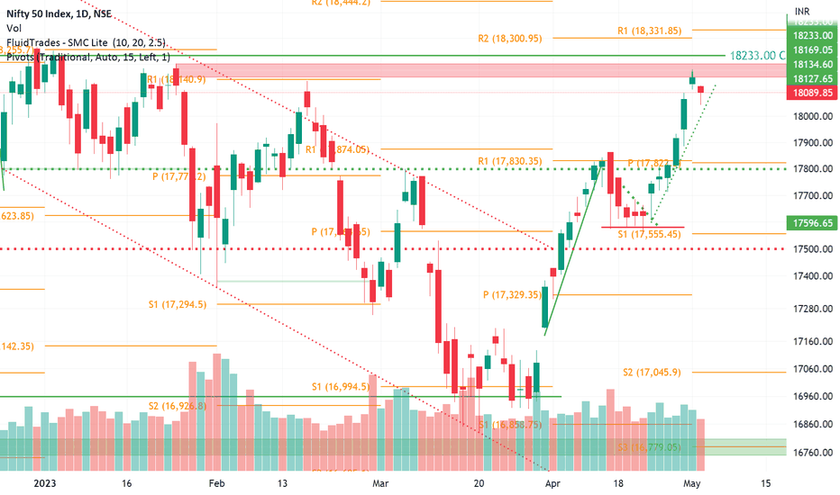

What are Charts?
Charts in Chartink are interactive tools that provide visual representations of stock price movements and technical indicators. They are designed to help traders analyze market trends, identify patterns, and make informed decisions.
Key Features:
- Customizable Timeframes: Analyze charts across various periods, from intraday to long-term trends.
- Technical Indicators: Add tools like RSI, MACD, Bollinger Bands, Moving Averages, and more.
- Drawing Tools: Mark support/resistance levels, trendlines, and patterns directly on the chart.
- Real-Time Updates: Get live price updates for accurate and timely analysis.
- Multiple Chart Types: Choose from candlestick, line, bar, or area charts for different perspectives.
These charts empower users to visualize and interpret stock data effectively.